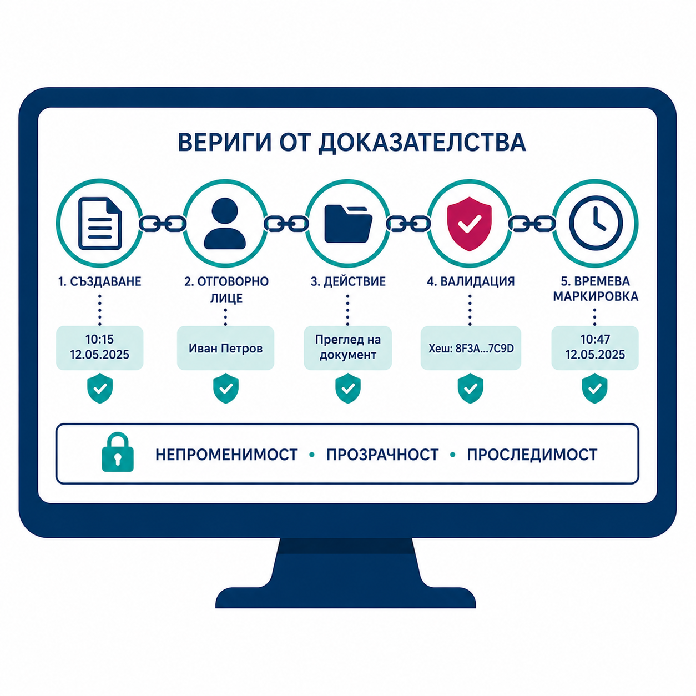
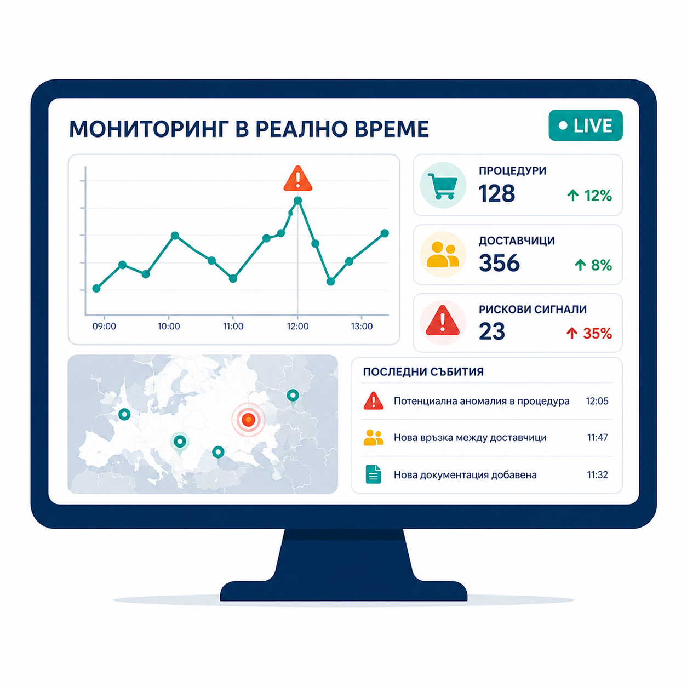

Хоризонт до 2030
НАСОКА 01
Блокчейн интеграция
Очаква се преход от пилотни проекти към внедряване на неизменни децентрализирани регистри. Блокчейн гарантира неизменяемостта и интегритета на данните, докато изкуственият интелект проследява когнитивната динамика в реално време. Бъдещите изследвания ще се фокусират върху анализ на криптирани данни без компрометиране на конфиденциалността, както и разработване на протоколи, устойчиви на квантови изчисления.
НАСОКА 02
Обясним изкуствен интелект (XAI)
Критична насока е разработването на модели, които предоставят проверими логически пътища от входните данни до заключенията — задължително условие за правна допустимост на алгоритмичните изводи. Очаква се приемането на правила като предложеното Федерално правило 707 в САЩ, поставящо стандарти за надеждност на машинно генерираните доказателства в съда.

НАСОКА 03
Вериги от доказателства
Генеративният изкуствен интелект ще революционизира анализа на „хартиената следа" на корупцията, свързвайки фрагментирани записи в машинночетими доказателствени вериги. Агентно-базираното моделиране (ABM) ще позволи изграждане на „дигитални близнаци" на институции — симулиране на антикорупционни политики преди реалното им въвеждане.

НАСОКА 04
Мониторинг в реално време
Самообучаващите се алгоритми ще актуализират превантивно оценките на риска и прогнозите, изпреварвайки трансформиращите се корупционни стратегии. Системите за компютърно зрение, интегрирани с аерокосмически технологии, ще гарантират обективен надзор при мащабни капиталови проекти и разкриване на незаконосъобразни дейности.
Допълнителни хоризонти
Национални стратегии
Правителствата се насърчават да приемат стратегии срещу „корупционното използване на изкуствения интелект" и да поддържат публични регистри на алгоритмите в публичния сектор.
Регулаторни пясъчници
Разширяването на контролирани среди за тестване ще позволи на институциите да експериментират с нови инструменти без пълната регулаторна тежест в начален етап.
Публично-частно сътрудничество
Оптимизирането на платформите за диалог (ОИСР) е критично за идентифициране на нови заплахи, включително алгоритмична имперсонация (deepfake) и синтетични цифрови самоличности.
Стратегическа визия
Векторът на развитие е насочен към трансформирането на изкуствения интелект в базов контролен компонент за институционалния интегритет — съизмерим по значение с киберсигурността. Целта надхвърля оптимизацията на разкриваемостта; тя е ориентирана към изграждане на устойчива „инфраструктура на доверието", възпрепятстваща структурно корупционните девиации.